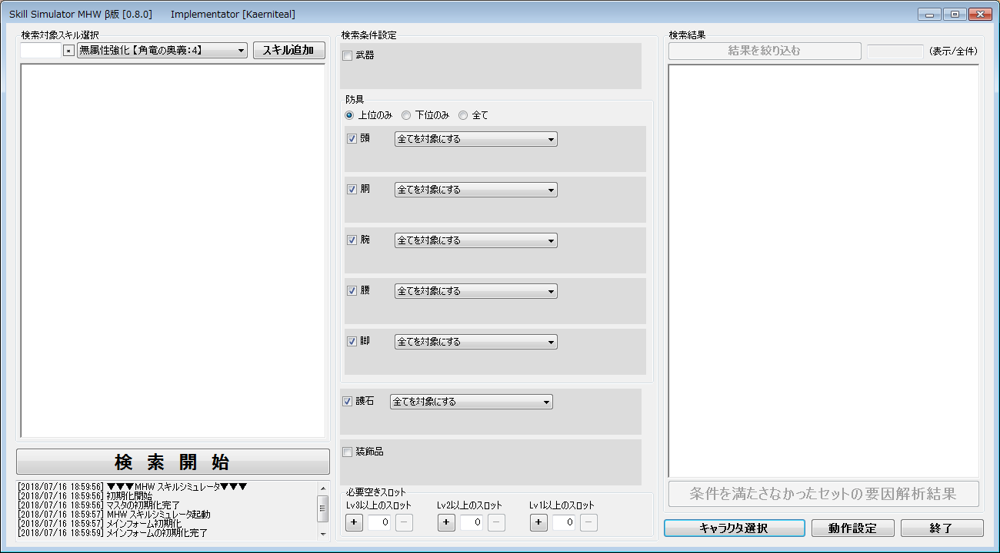

【SkillSimulatorMHW】


PS4のゲームモンスターハンターワールド(@CAPCOM)のスキルシミュレータです。
Windows専用アプリケーションです。
スキルシミュレータはWeb版、アプリ版と色々ありますが、
このシミュレータは条件を満たさない組み合わせの解析機能がウリです(｀・ω・´)
アプリケーションの詳細はReadmeもご覧ください。
【特徴】
・条件を満たす組み合わせが見つからない場合、惜しい組み合わせを解析して表示できます。
・ローカルで動作するアプリケーションなので、ネットワークに繋がらない環境でも使えます。
・検索を途中で打ち切らず全ての結果を得た後、結果をさらに絞り込むことが可能です。
・自分の持っている装飾品に限定して検索が可能です。
・総当り方式で検索するため、多少時間はかかりますが組み合わせの漏れは無い(はず)です。
・スロットのみを目的とした防具が該当する場合、抽象化して結果を得られます。(スロット②胴)とか。
【注意】
・Windows 7 以降のWindowsで動作します。
・.Net FrameWork 4.5.1 がインストールされている必要があります。
・ディスプレイの解像度が1300×720以上必要です(無くても起動できますが使い物になりません)
・バージョンチェックの為にインターネットへの接続を行いますが、不要であれば無効化できます。
【Download】
まだβ版ですが一通りのことはできます。
Ver 0.8.0 (2018/7/16 公開)
注）Chromeでダウンロードしようとするとブロックの確認が出ることがありますが、
そのまま実行していただいて問題ありません。
どなたか対処方法ご存知でしたら教えて頂けないでしょうか・・
【今後の展望】
・装備の除外リスト機能を追加予定です。
・コンボボックスによる選択を、専用のリストから選択できるように修正予定です。
・スキルや装備のお気に入りリスト機能を検討しています。
【連絡先】
不具合や改善要望等ございましたら。下記のアドレス(@に変えてください)にご連絡ください。
連絡先：SkillSimulatorMHW アットマーク gmail.com
ただし対応を保障するものではありません。すみませんです。